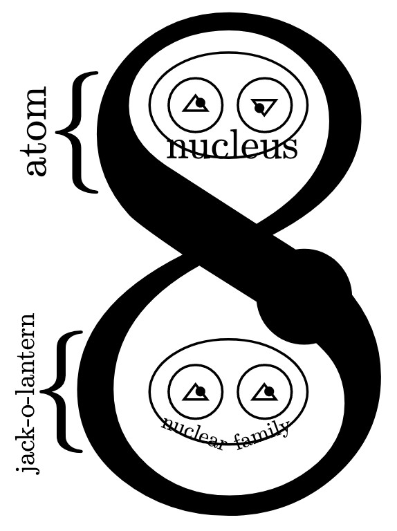

ALT text goes here? I don't know if alt-text readers display 'visually hidden' CSS.
Gluon Spoiler
February 10, 2023
https://zipditto.com
https://gmike.substack.com
(QR code for this page)

Preface
Please allow me to attempt to capture your attention. We begin with a photograph of a gigababe and a gigadude.
iii
This book, “Gluon Spoiler,” is a spoiler for the book “Deluxe Beer Garden,” because it resolves the mysteries I sewed into DBG.
Gluon Spoiler also spoils many other mysterious books I have written. Herein, I simply make my intellectual canon as clear as possible, by providing entertaining references to my other books.
On with the entertainment!
I have a master’s degree from Harvard. I photoshopped the photo for my student ID, before I submitted it. Lol!
I claimed to be involved in espionage in my book “Deluxe Beer Garden,” and other books, too.
v
I was the student speaker at GMU’s Engineering School’s convocation ceremony in 2007.
I was an Associate Staff member at MIT Lincoln Laboratory (LL).
vi
I once hacked the United States nuclear-warfare defense system, during a live-fire war game (ZBG 219). https://archive.ll.mit.edu/publications/Annual_Report_2010.pdf. See: Towards Net-Centric Cyber Survivability for Ballistic Missile Defense
vii
Vertically centered hero sign-up form
Below is an example form built entirely with Bootstrap’s form controls. Each required form group has a validation state that can be triggered by attempting to submit the form without completing it.
Border hero with cropped image and shadows
Quickly design and customize responsive mobile-first sites with Bootstrap, the world’s most popular front-end open source toolkit, featuring Sass variables and mixins, responsive grid system, extensive prebuilt components, and powerful JavaScript plugins.

Dark mode hero
Quickly design and customize responsive mobile-first sites with Bootstrap, the world’s most popular front-end open source toolkit, featuring Sass variables and mixins, responsive grid system, extensive prebuilt components, and powerful JavaScript plugins.
I dedicate the text of this document to the public domain. Photos are copyright unknown, used under fair-use caveat. Feel free to be creative!